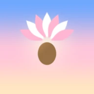
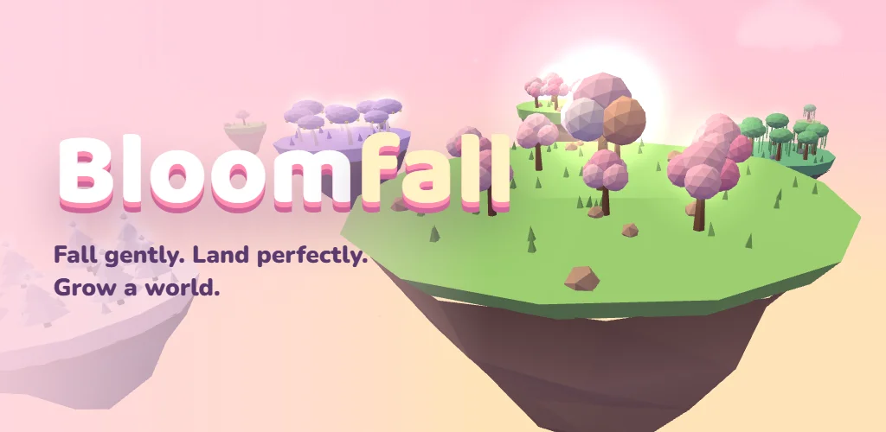
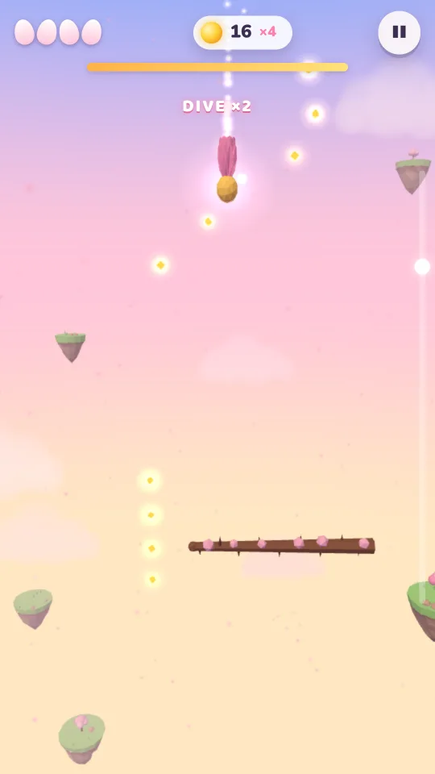
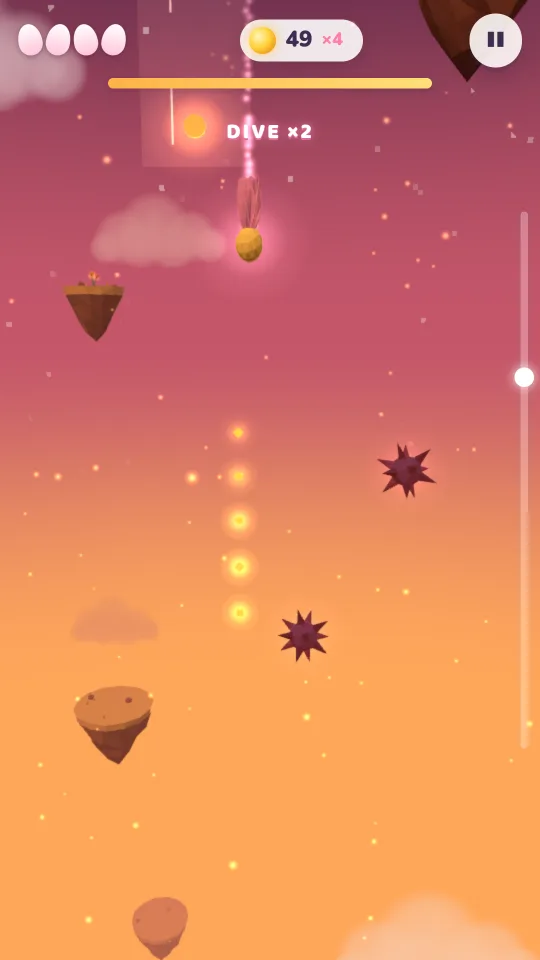
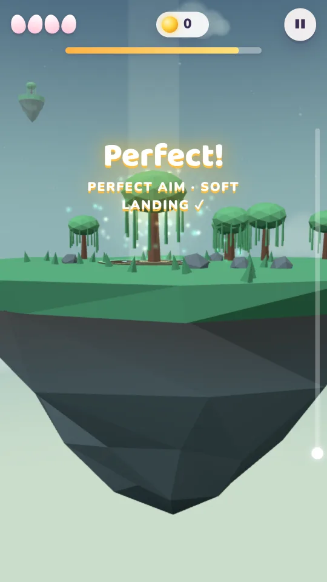
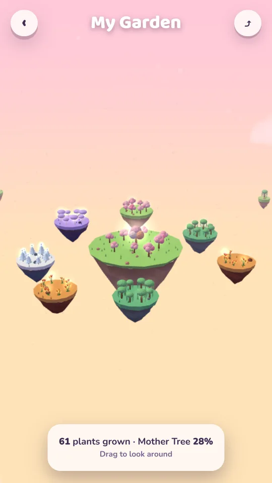

Fall gently. Land perfectly. Grow a world.
You are a tiny seed drifting down through the sky. Hold to open your petals and glide, let go to dive, and steer past thorny branches, storms and spinning crystals to land on a patch of glowing soil far below. Every perfect landing grows a new plant in your own floating garden.





25 chapters across five skies: Dawn Meadow, Monsoon Cliffs, Ember Canyon, Aurora Tundra and Starfall Reach, each with its own hazards.
Every level you clear grows a plant. Chapters add islands around your home island, and a Mother Tree grows with your stars.
From the gentle Dandelion to the spinning Maple Wing and the Celestial Bloom, each falls and steers in its own way.
Upgrade Sun Reservoir, Pollen Pull and Grace through eight levels each.
One shared level a day to compare with friends, and an endless dive to see how deep you can go.
Play with one thumb, a game pad or your TV remote. Progress stays on your device; no account needed.
Bloomfall is free with occasional ads on phones and tablets, and optional ads you can choose to watch for a new seed or a boost upgrade. A one-time Remove Ads + Premium purchase removes the between-level ads and adds two Premium seeds and the top level of every boost. The Android TV version has no ads.